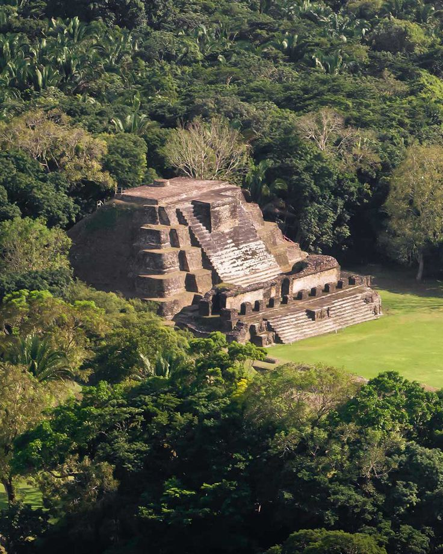
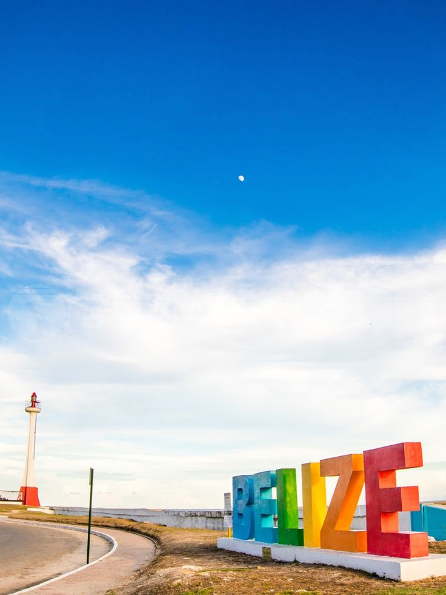
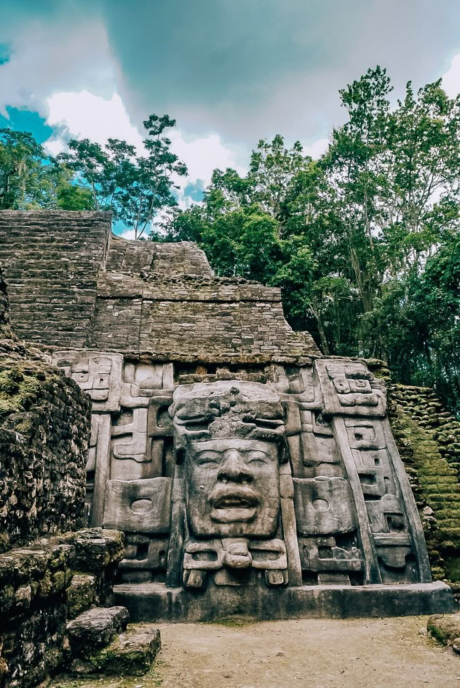

A Journey Through Belizean History
Belize's history is written in stone, soil, and sea. Our landmarks tell a story of powerful ancient kingdoms giving way to a new era of colonial settlement and, finally, proud independence. Journey with us from the sacred steps of Maya temples to the coastal beacons that guided ships to our shores.
Landmark 1: Altun Ha
Description: Once a vital trade and ceremonial center for the ancient Maya, Altun Ha is one of Belize's most famous archaeological sites. The "Temple of the Masonry Altars" stands as its iconic centerpiece, a testament to the advanced engineering and spiritual significance of the civilization that built it. It was here that the famous "Jade Head" of the sun god Kinich Ahau was discovered.
Landmark 2: The Baron Bliss Lighthouse
Description: Standing guard at the mouth of the Belize River, the Baron Bliss Lighthouse is a cherished symbol of Belize City. It was erected in memory of Baron Henry Edward Ernest Victor Bliss, a great benefactor to the nation who, despite never setting foot on its soil, fell in love with Belize's coast and left his fortune to its people. The nearby sign, a popular photo spot, proudly welcomes all to the country.
Landmark 3: Lamanai
Description: Meaning "submerged crocodile" in the Mayan language, Lamanai is one of the longest-continuously-occupied sites in the Maya world. Its temples, plazas, and intricately carved stelae, like the one pictured, overlook the New River Lagoon. The stela monuments served as stone records, documenting the powerful rulers and pivotal events that shaped Lamanai's long and storied history.